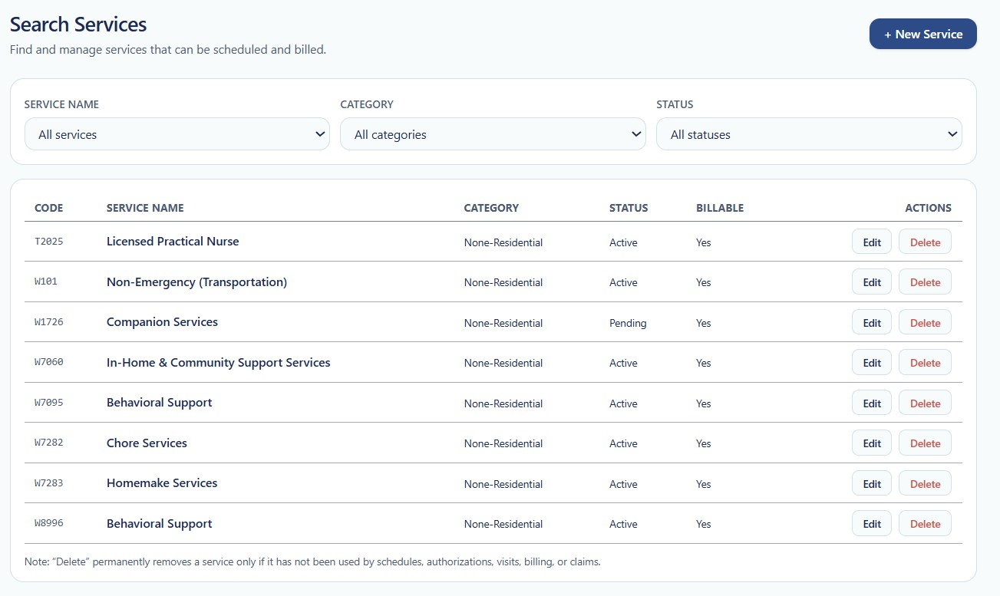

SERVICE MANAGEMENT
Search Services
The Search Services page allows authorized users to locate, review, filter, edit, and manage services that may be used for scheduling and billing throughout True Care System.
The page provides filters for service name, category, and status, together with a service list showing each service's code, name, category, current status, billable configuration, and available actions.
Open Search Services
- Sign in to True Care System.
- Open the Services menu from the main application navigation.
- Select Search Service.
The Search Services page will open and display the service filters and available service records.
Search Services Page Overview
The Search Services page contains a New Service action, three search filters, and a service results table.

Figure 1. Search Services page showing search filters, service records, status, billable configuration, and record actions.
New Service Action
The + New Service button is displayed in the upper-right area of the page.
Select this button to open the New Service page and create a new standard or provider-specific service.
Search the existing service list first to avoid creating a duplicate service with the same name, code, category, or operational purpose.
Search Filters
Use the available filters to narrow the displayed service records.
| Filter | Default Selection | Description |
|---|---|---|
| Service Name | All services | Filters the results by a selected service name. Keep All services selected to display all available service names. |
| Category | All categories | Filters the service list by service category, such as Residential or Non-Residential, depending on the categories configured in the system. |
| Status | All statuses | Filters records according to their current status, such as Active, Pending, or Inactive. |
Step 1 — Filter by Service Name
- Open the Service Name selection list.
- Select the required service.
- Review the updated service list.
Select All services to remove the service-name filter and display all available service records.
Step 2 — Filter by Category
- Open the Category selection list.
- Select the required service category.
- Review the matching services displayed in the results table.
In the screenshot, the listed services are categorized as Non-Residential.
Step 3 — Filter by Status
- Open the Status selection list.
- Select the required status.
- Review the filtered results.
Status filters may be used to locate active services, pending services, inactive services, or all services.
Using Multiple Filters
Filters may be used together to locate a more specific group of services.
For example:
- Select a specific Service Name.
- Select Non-Residential as the Category.
- Select Active as the Status.
The results table will display only records that meet the selected filter conditions.
Service Results Table
The results table displays the services that match the current filter selections.
| Column | Example | Description |
|---|---|---|
| Code | W7060 | Displays the billing, procedure, or service code assigned to the service. |
| Service Name | In-Home & Community Support Services | Displays the official name of the configured service. |
| Category | Non-Residential | Displays the category assigned to the service. |
| Status | Active | Displays the current operational status of the service. |
| Billable | Yes | Indicates whether the service is configured for claims, invoices, or billing workflows. |
| Actions | Edit / Delete | Provides the available service-management actions for the selected record. |
Example Service Records
The screenshot shows the following service records:
| Code | Service Name | Category | Status | Billable | Actions |
|---|---|---|---|---|---|
| T2025 | Licensed Practical Nurse | Non-Residential | Active | Yes | Edit / Delete |
| W101 | Non-Emergency (Transportation) | Non-Residential | Active | Yes | Edit / Delete |
| W1726 | Companion Services | Non-Residential | Pending | Yes | Edit / Delete |
| W7060 | In-Home & Community Support Services | Non-Residential | Active | Yes | Edit / Delete |
| W7095 | Behavioral Support | Non-Residential | Active | Yes | Edit / Delete |
| W7282 | Chore Services | Non-Residential | Active | Yes | Edit / Delete |
| W7283 | Homemake Services | Non-Residential | Active | Yes | Edit / Delete |
| W8996 | Behavioral Support | Non-Residential | Active | Yes | Edit / Delete |
Edit a Service
Select Edit in the Actions column to open the selected service record.
The service detail page may allow an authorized user to review or update information such as:
- Service name.
- Billing or service code.
- Category.
- Status.
- Billable configuration.
- Ratio or zone level.
- Service format and units.
- Rate.
- Description and internal notes.
Changes to an existing service may affect scheduling, authorizations, visits, billing, claims, payroll, reporting, and historical records.
Delete a Service
Select Delete in the Actions column to request permanent removal of the service.
A service may be permanently deleted only when it has not been used by schedules, authorizations, visits, billing records, or claims.
This restriction protects operational and historical data from becoming incomplete or disconnected.
When a service has already been used, change its status to inactive rather than deleting the record.
Before Deleting a Service
- Confirm that the correct service record is selected.
- Verify that the service has not been used in schedules.
- Verify that the service has not been connected to an authorization.
- Confirm that no visits reference the service.
- Confirm that no billing records or claims reference the service.
- Use an inactive status instead when historical records must be preserved.
Service Status
| Status | Availability | Description |
|---|---|---|
| Active | Available | The service is approved and available for applicable operational workflows. |
| Pending | Limited or awaiting approval | The service configuration may still require review, approval, or completion. |
| Inactive | Not available for new use | The service is retained for historical review but should not be selected for new operational activity. |
Billable Status
The Billable column indicates whether the service is configured for billing-related workflows.
- Yes — The service may be used for claims, invoices, or related billing processing.
- No — The service is not configured for billing.
Billable status should be verified before assigning the service to production scheduling or authorization workflows.
Recommended Service Review
Review service records regularly to maintain accurate and controlled service configuration.
- Confirm that service names and codes remain accurate.
- Review pending services requiring completion or approval.
- Inactivate services that should no longer be used.
- Confirm that billable settings match operational requirements.
- Check for duplicate or similar services.
- Review rates and unit configuration before production use.
Security
- Only authorized users should create, edit, delete, activate, or deactivate services.
- Service-management permissions should be assigned according to job responsibilities.
- Deletion should be limited to users with an approved administrative role.
- Service access and modification activity may be recorded in Audit Logs.
HIPAA Considerations
- Service records should not contain unnecessary individual PHI.
- Access service configuration only when required for assigned job responsibilities.
- Preserve historical service relationships used in care delivery, authorizations, visits, and billing.
- Do not delete records when inactivation is required to maintain an accurate audit history.
Troubleshooting
A service does not appear in the list.
- Set Service Name to All services.
- Set Category to All categories.
- Set Status to All statuses.
- Refresh the page.
- Verify that the service was saved successfully.
The list shows no matching services.
- Review the selected filters.
- Remove one filter at a time.
- Reset all filters to their default selections.
The Delete action does not work.
The service may already be referenced by a schedule, authorization, visit, billing record, or claim. Change the service to inactive instead of deleting it.
The Edit action is unavailable.
- Verify that your account has service-management permissions.
- Confirm that the correct user account is signed in.
- Contact the Provider Administrator if access is required.
Frequently Asked Questions
How do I display every service?
Select All services, All categories, and All statuses.
Can I use more than one filter?
Yes. Service Name, Category, and Status filters may be used together.
How do I create a new service?
Select the + New Service button in the upper-right area of the Search Services page.
Can I edit an active service?
An authorized user may edit an active service, but changes should be reviewed carefully because the service may already be used by other modules.
Why can I not delete a service?
A service cannot be deleted after it has been used by schedules, authorizations, visits, billing records, or claims.
Should an old service be deleted?
Normally, no. Change the service to inactive when historical records must remain available.
What does Billable = Yes mean?
It means the service is configured for use in claims, invoices, or related billing workflows.